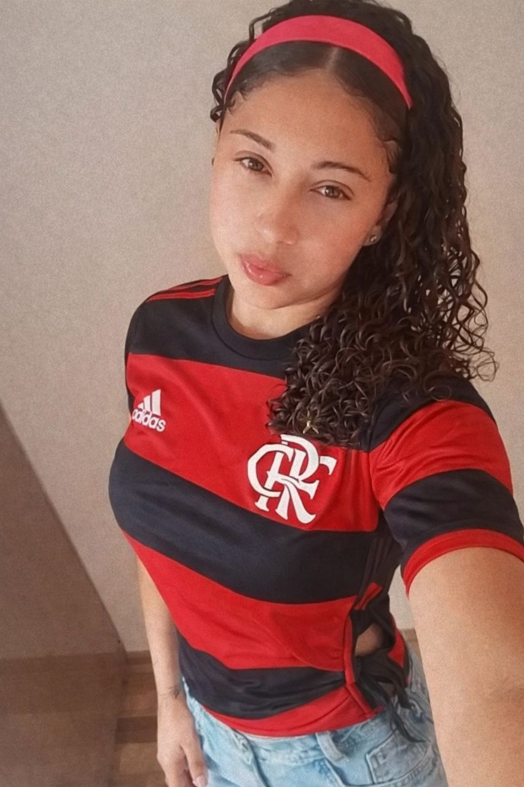

A Torcedora dos Dois Títulos 🏆🏆
Todo mundo conhece aquela menina que diz que ama futebol…
Mas ninguém imaginava que ela amava dois campeões ao mesmo tempo.
Num domingo ela apareceu toda feliz na rua com a camisa do
Clube de Regatas do Flamengo.

Pulando, gritando, quase abraçando poste.
— “É CAMPEÃO! Aqui é Mengão! 🔴⚫”
Postou 37 stories, botou música de torcida, escreveu:
“Respeita o maior do Brasil!”
Até aí… normal.
Só que na mesma hora do jogo do flamengo, teve jogo do
Fortaleza Esporte Clube.
E adivinha?
Lá vem ela de novo…
Só que dessa vez com outra camisa.
Agora era azul, vermelha e branca.

O povo ficou olhando sem entender nada.
Um amigo perguntou:
— “Ué… tu não era flamenguista?”
Ela respondeu com a maior calma do mundo:
— “Sou… mas também sou Fortaleza quando precisa.”
Outro amigo falou:
— “Mas não dá pra torcer pros dois desse jeito!”
Ela respondeu:
— “Dá sim. Eu torço pra quem levanta a taça.” 😌🏆
Agora ninguém mais discute com ela.
Quando tem final de campeonato, o pessoal só espera pra ver qual camisa ela vai aparecer usando.
Porque uma coisa é certa:
Se tiver troféu, ela já tá comemorando antes mesmo do apito final. 😂⚽